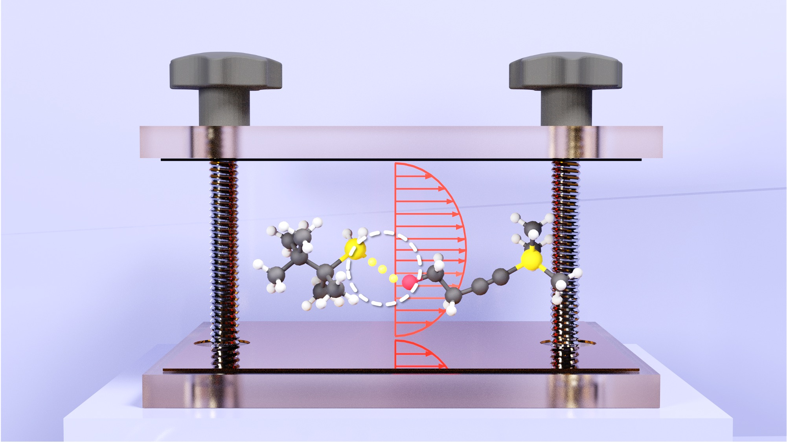

Publications † Equal Contribution * Corresponding Author
Ring-Polymer Quantization of Photon Field in Polariton Chemistry S. Chowdhury, A. Mandal , P Huo*
chemRxiv
(preprint) (2020) link

Resonance Theory of Vibrational Strong Couplings in Polariton Chemistry X. Li, A. Mandal* , P Huo*
chemRxiv
(preprint) (2020) link
Polarized Fock States and the Dynamical Casimir Effect in Molecular Cavity Quantum Electrodynamics A. Mandal* , S. M. Vega, P Huo*
The Journal of Physical Chemistry Letters
11 (XX) 9215 (2020) link pdf
Resolution of Gauge Ambiguities in Molecular Cavity Quantum Electrodynamics M. Taylor† † *
Physical Review Letters
125 (12) 123602 (2020) link pdf
Polariton Mediated Electron Transfer via Cavity Quantum Electrodynamics A Mandal* , T D Krauss* , P Huo*
The Journal of Physical Chemistry B
124(29) 6321 (2020) link pdf
Quasi-Diabatic Scheme for Nonadiabatic On-the-Fly Simulations W Zhou, A Mandal, P Huo*
The Journal of Physical Chemistry Letters
10 (22), 7062 (2019) link pdf
Investigating New Reactivities Enabled by Polariton Photochemistry A Mandal, P Huo*
The Journal of Physical Chemistry Letters
10 (18), 5519 (2019) link pdf
Quasi Diabatic Propagation Scheme for Direct Simulation of Proton-Coupled Electron Transfer Reaction A Mandal, J S Sandoval, F A Shakib* , P Huo*
The Journal of Physical Chemistry A
10 (18), 5519 (2019) link pdf
Symmetric quasi-classical dynamics with quasi-diabatic propagation scheme J S Sandoval, A Mandal, P Huo*
The Journal of Chemical Physics
149 (4), 044115 (2018) link pdf
Investigating Photoinduced Proton Coupled Electron Transfer Reaction using Quasi Diabatic Dynamics Propagation A Mandal, F A Shakib, P Huo*
The Journal of Chemical Physics
148 (24), 244102 (2018) link pdf
Quasi-Diabatic Representation for Nonadiabatic Dynamics Propagation A Mandal† † *
Journal of Chemical Theory and Computation
14 (4), 1828-1840 (2018) link pdf
Analyzing total optical absorption coefficient of impurity doped quantum dots in presence of noise with special emphasis on electric field, magnetic field and confinement potential
A Mandal, S Sarkar, A Ghosh, M Ghosh*
Chemical Physics
463, 149-158 (2015) link pdf
Diffusion of small solute particles in viscous liquids: cage diffusion, a result of decoupling of solute–solvent dynamics, leads to amplification of solute diffusion
S Acharya, M K Nandi, A Mandal, S Sarkar, S M Bhattacharyya*
The Journal of Physical Chemistry B
119 (34), 11169-11175 (2015) link pdf
Influence of position-dependent effective mass on the nonlinear optical properties of impurity doped quantum dots in presence of Gaussian white noise
A Ghosh, A Mandal, S Sarkar, M Ghosh*
Optics Communications
367, 325-334 (2016) link pdf
Modulating nonlinear optical properties of impurity doped quantum dots via the interplay between anisotropy and Gaussian white noise
S Sarkar, A Ghosh, A Mandal, M Ghosh*
Superlattices and Microstructures
90, 297-307 (2016) link pdf